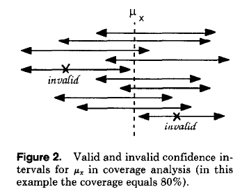
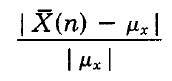
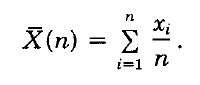

___________________________
The confidence interval shown at the end of a simulation run contain the true value of the estimated index with the selected probability
(1 - α) or, equivalently, if an experiment is repeated many times, in (1 - α )100% of cases. Various difficulties in meeting theoretical assumptions can cause that the real rate of the confidence intervals containing the true parameter differs significantly from (1 -α ) . The robustness of the above methods of data collection and analysis is usually measured by the coverage of confidence intervals, defined as the frequency with which the intervals (X(n) - Δx, X(n) + Δx) contain the true parameter μx, at a given confidence level (1 - α), 0 <α< 1.

The coverage analysis can be applied only to systems with a theoretical well-known behaviour, since the value of μx has to be known. Any analyzed method must be applied in a statistically significant number of repeated simulation experiments, usually 200 or more replications, to determine the fraction of experiments producing the final confidence intervals covering the true mean value of the estimated parameter.
_________________________
Let the true value of a quantity be x and the measured or inferred value x0. Then the relative error is defined by:
 where 
μx is the mean value.
The relative error is the sum of the deviators between the sample values and the mean value, divided for the mean value.